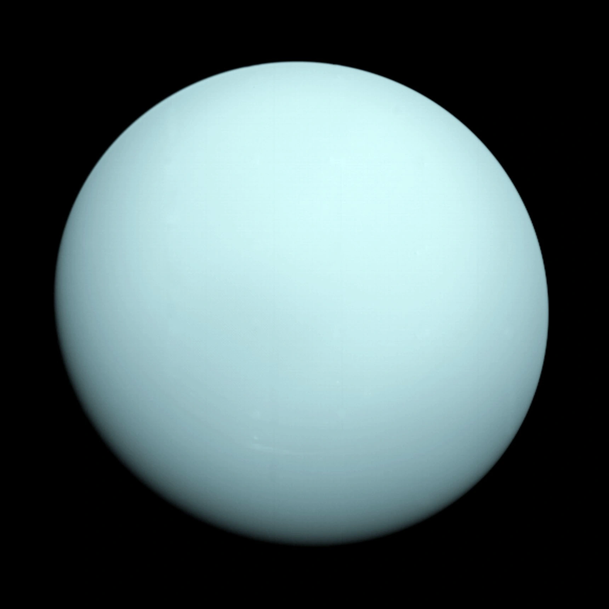

Planet Raksasa Es Utama
Uranus adalah planet ketujuh dari Matahari dan planet terbesar ketiga berdasarkan diameter di Tata Surya. Berbeda dengan raksasa gas Jupiter dan Saturnus, Uranus dikategorikan sebagai Ice Giant (Raksasa Es) karena komposisi internalnya didominasi oleh unsur-unsur yang lebih berat seperti air, amonia, dan metana dalam wujud es panas bertekanan tinggi. Keunikan paling mencolok dari Uranus adalah kemiringan sumbu rotasinya yang ekstrem mencapai 97,77 derajat, membuat planet ini seolah-olah menggelinding mengelilingi Matahari. Hal ini diperkirakan akibat tabrakan dahsyat dengan objek seukuran Bumi pada masa awal pembentukan Tata Surya.